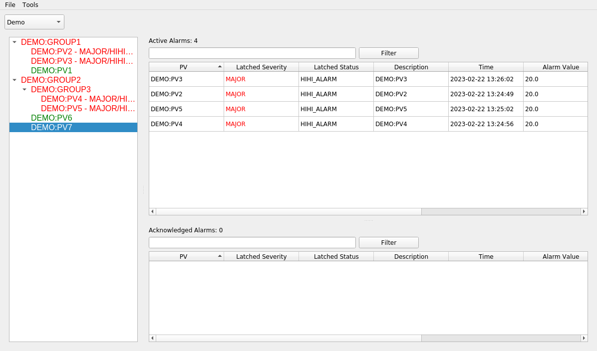
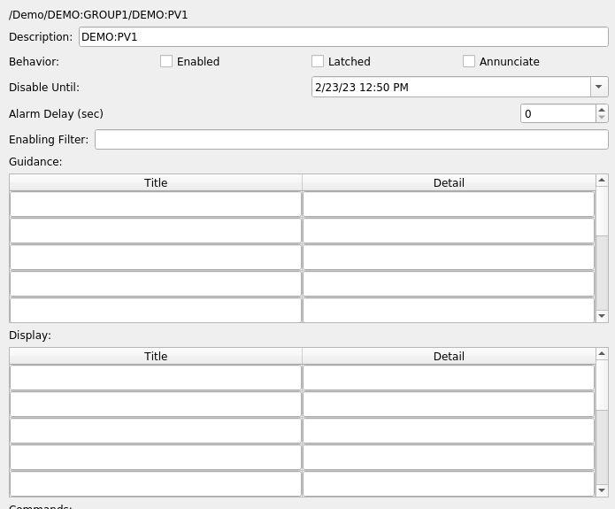

Alarm Manager
Since the alarm server and logger are both built with Phoebus, many of the interface details and actions described here will be familiar to anyone who has used the Phoebus alarm interface in the past.
NOTE
This alarm manager interacts with NALMS only, and does not directly communicate using EPICS with any IOCs. Therefore all actions available from the interface are write-safe when it comes to EPICS - nothing will write back to any PV.
Starting the Alarm Manager
As this application is a frontend interface to NALMS, a running NALMS instance is required. The specific component which the alarm manager will be communicating with is kafka.
Both the location of the kafka instance, and the alarm topics which should be monitored are required arguments upon startup.
From a terminal window with the python environment that the alarm manager was installed into active, run the following command, replacing the name of the topic and the location of kafka as appropriate:
slam --topics Demo --bootstrap-servers localhost:9092
It is possible for the interface to monitor multiple topics at once if passed a comma-separated list:
slam --topics Demo,Accelerator,Cryoplant --bootstrap-servers localhost:9092
In an ideal scenario, the main window will look something like this:

The panel to the left of the window is the tree view of all the alarms being monitored. It will match the alarm hierarchy defined in the xml config file above. To the right are two tables, the top one will display PVs which are in an active alarm state, the bottom one will display acknowledged alarms (more on this later).
Active Alarms
In order to make this display a little more interesting, let's run a few caput commands to get PVs into an alarm state:

When a PV moves into an alarm state, it is reflected both in the change to the alarm tree, as well as the addition to
the active alarm table. Note that when a PV returns to a normal alarm status, the corresponding entry is removed
from the alarm table. This behavior is caused by the latched option. If latched is set to true, then the alarm
will remain in the table until someone manually acknowledges it (see the next section). The purpose would be to set
the latched status to true for any alarm which requires someone to look into why it happened, even if it returns
to normal on its own.
Acknowledging and Bypassing Alarms
When a PV or top level group has gone into an alarm status, right-clicking on it will bring up a menu for taking additional actions on the alarm.
The first of these actions is to acknowledge it. This basically means that someone is aware that the PV is now in an alarm state, and action is being taken to correct that. Upon clicking on acknowledge, note that the alarm status changes, and it is moved to the bottom table for acknowledged alarms:

As can be seen in the example, multiple alarms in a group can be acknowledged at once by acknowledging thier top-level summary alarm. And if an acknowledgment is done by accident, it can be reverted with the same right-click menu and choosing unacknowledge.
The other important action there is to enable or disable an alarm. Disabling an alarm will stop any future updates to the underlying PV(s) from being displayed until it is re-enabled. One example where this is useful is if a component is undergoing planned maintenance and so there is no need for any alarms to trigger until the maintenance has been completed.
Finally the remaining two options are to copy the name of the PV to the clipboard, and to draw a plot of the PV in a separate window. This plot is rendered using PyDM.
Additional Options Menu
By double-clicking on a PV in the alarm tree, a menu will be brought up displaying a few additional options as well as more information.

The Disable Until option will bypass an alarm as described above, except with a specified end time set. Once that
time is reached, the alarm will automatically be re-enabled. In the above maintenance example, this can be useful
to ensure someone does not need to remember to manually re-enable the alarm once the maintenance is completed.
The Alarm Delay represents how long the PV must be in an alarm state before triggering the alarm. The default is
to raise an alarm immediately, but this can be increased if temporary fluctuations in values are to be expected.
Information under guidance is free-form and can be used to indicate information like who to call if a certain PV or component goes into an alarm state.
Please note that any information entered here while the application is running will NOT be persisted when the associated alarm server is updated or restarted. To ensure persistence, all information must be saved in the xml configuration file.